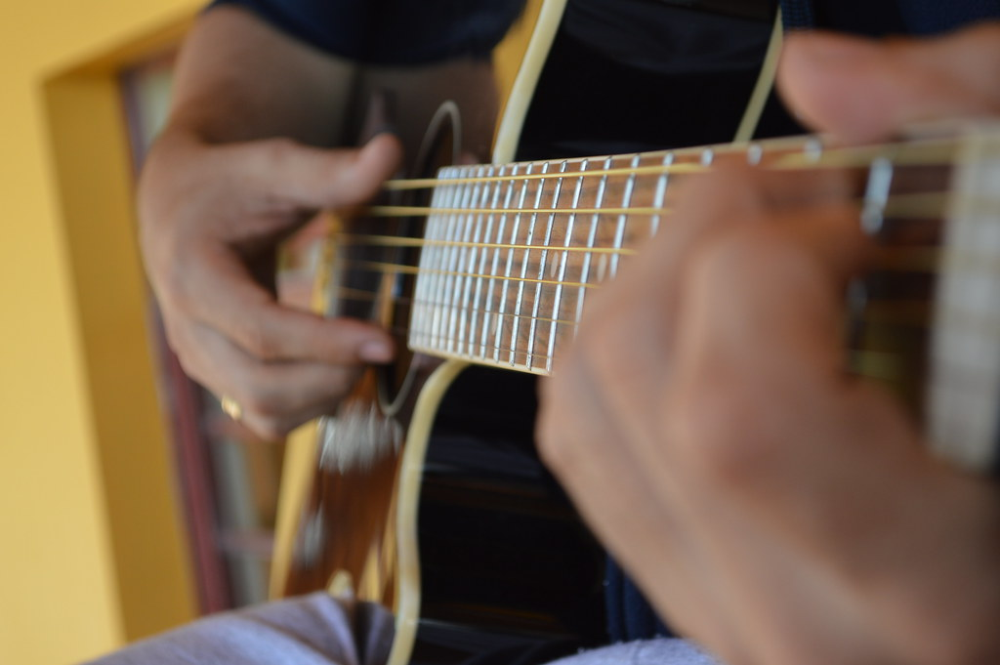

Lead sheet
Intro4 bars
GD/F#EmC
Verse 18 bars
GD/F#EmCGD/F#CD
Verse 2bar 5 of 8
GD/F#EmCEmCGD
Chorus8 bars
CGDEmCGDD
Bridge4 bars
EmDCC

Em
CGD
The lyric line shows here · with the next words
Camera

EMEET C60E1080p · 60 fps · Warm
Inputs and monitor
| Input | Level | Delay | Hear | Clean | Rec |
|---|---|---|---|---|---|
| Guitar · E2 Gen2 | 26 ms | On | Hum · Gate −26 | Armed | |
| Vocal · PD200X | 26 ms | On | Off | Armed | |
| Pad · Warm, G | — | Off | — | — | |
| YouTube · app | 26 ms | On | — | — |
Buzz cleanup on the guitar: hum filter and gate at −26 dB, learned 18 Nov.
Output modeExclusive · Low latency · Shared
Take 3 4:41 · 0 dropoutsTake 2 2:05 · 0 dropouts
Guitar + Vocal + camera